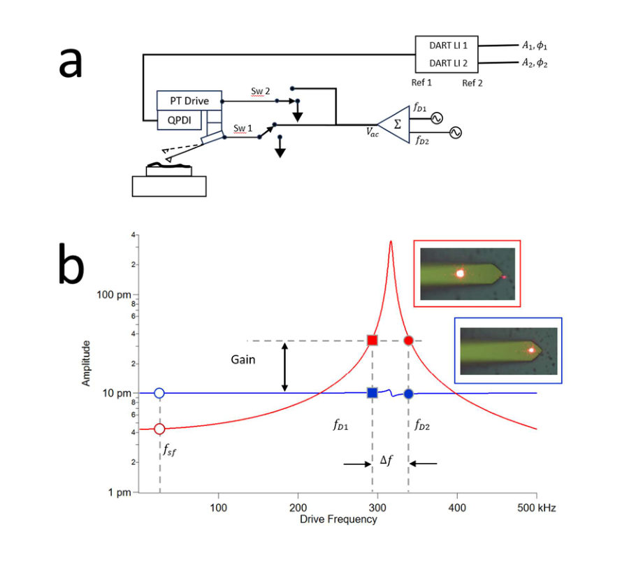

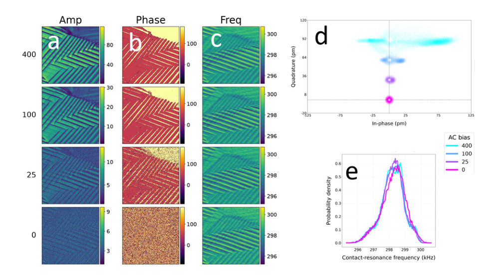
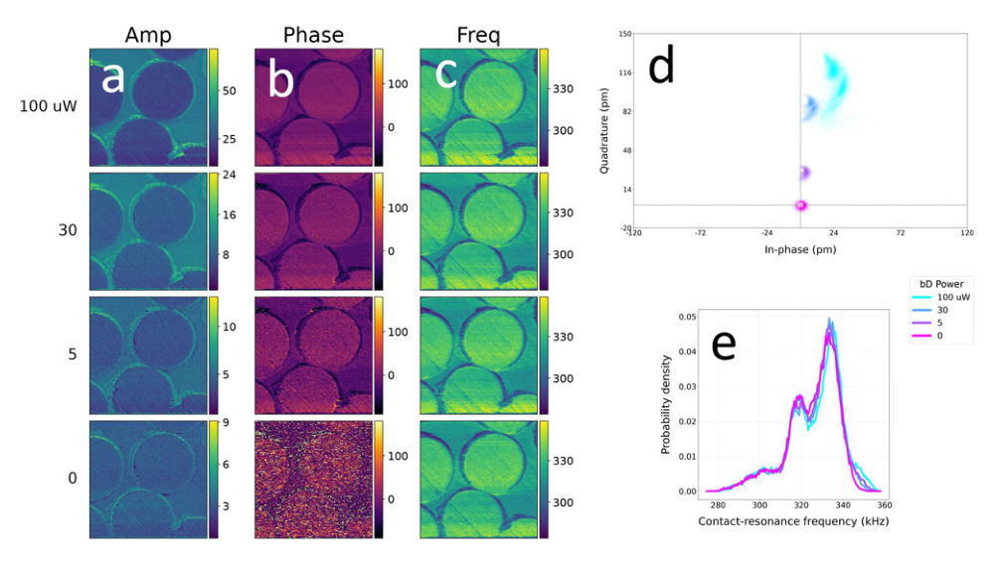
Authors: Xiao Liu, Yaroslav Zhumagulov, Yuang Jie, Ahmet Enes Bozcali, Johan Felisaz, Qi Zhang, Oldvrich Cicvarek, Kenji Watanabe, Takashi Taniguchi, Zdeněk Sofer, Oleg V. Yazyev, Ahmet Avsar
Type: both · Category: other · PDF: https://arxiv.org/pdf/2608.23003v1
Analysis basis: full PDF text, analyzed in chunks
Topic relevance: Keldysh / 2PI / non-Gaussian methods 2/5 · methods for driven-dissipative 2/5 · analog quantum simulation 1/5 · driven-dissipative phase transition 1/5 · non-equilibrium universality 1/5 · quantum measurements 1/5
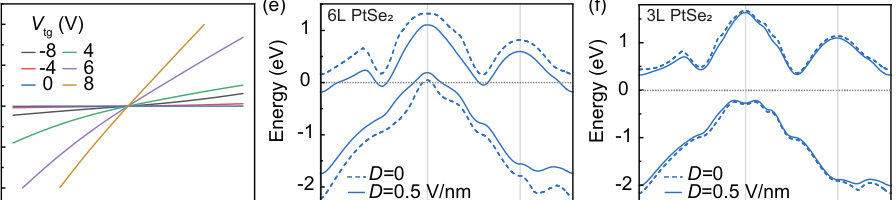
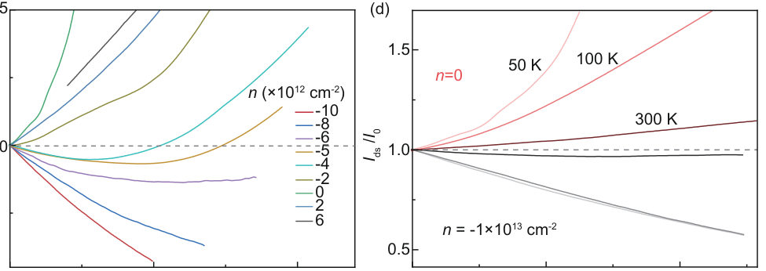
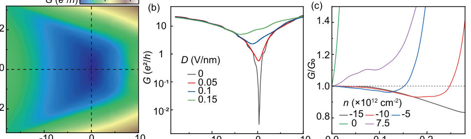
Summary. This work demonstrates that applying an external perpendicular electric field can fundamentally reconstruct the electronic band structure in few-layer PtSe2, particularly when the material is near a semiconductor-to-semimetal transition. By measuring transport properties, the authors show that this field causes gap closure and modifies valence-band conductivity. This establishes finite-density transport as a sensitive tool for probing field-driven electronic structure engineering beyond simple band-gap control.
Why it may be interesting. While focused on solid-state physics, the concept of external fields inducing fundamental changes in electronic band structure and transport properties is relevant to understanding engineered quantum materials and open quantum systems.
Main problem. The study investigates how a perpendicular displacement field modifies the low-energy electronic transport in few-layer semiconductors, focusing on the interplay between the field and interlayer hybridization.
Main result. The displacement field strongly reconstructs the low-energy band structure, causing gap suppression near charge neutrality and modifying valence-band conductivity in a thickness-dependent manner.
Method. The research combines electrical transport measurements on dual-gated devices with theoretical modeling using Wannier tight-binding calculations.
Model / system. The system is few-layer PtSe2, a layered semiconductor whose electronic structure is sensitive to thickness. The theoretical model uses a Wannier Hamiltonian incorporating an out-of-plane electric field term.
Key observables. Conductance (G), minimum current, normalized current vs. displacement field (D), and the evolution of the band gap.
Important parameters / regimes. Layer thickness (3L vs 6L), temperature (50 K to 300 K), and the magnitude of the perpendicular electric field (D).
Assumptions / limitations. The theoretical calculations utilize a fixed-relaxation-time approximation and neglect contact resistance or field-dependent disorder scattering.
Figures summary. Figures show device structures, temperature-dependent transfer/output characteristics, current maps, and theoretical conductance plots confirming field-induced band overlap and reconstruction.
Paper structure. The paper establishes the physical setup using device measurements, presents the core findings regarding field-induced transport changes in 6L PtSe2, and supports these observations with detailed Wannier model calculations.
In layered semiconductors, a perpendicular displacement field generates an interlayer potential difference that competes with interlayer hybridization, modifying both the band gap and the finite-density electronic states that carry current. Resolving this interplay requires a material lying close to the semiconductor-to-semimetal transition, where moderate electric fields can strongly reshape the low-energy electronic structure. Here, we investigate displacement-field-driven transport in dual-gated semiconducting PtSe2, whose pronounced thickness-dependent electronic structure provides access to this low-band-gap regime. Unlike thinner layers, the displacement-field response is strong in six-layer PtSe2, which lies at the verge of the semiconductor-to-semimetal crossover with only a small residual transport gap. Even weak displacement fields rapidly suppress this residual gap near charge neutrality, driving the system toward a band-overlap regime. At the same time, the conductivity decreases in the heavily hole-doped regime, demonstrating that the displacement field modifies not only the gap but also the conducting valence-band states. Fixed-relaxation-time Wannier transport calculations reproduce both responses, showing that they originate from field-induced band overlap together with reconstruction of the valence-band dispersion. These results establish finite-density transport as a sensitive probe of displacement-field-driven electronic structure reconstruction and extend electrical control beyond conventional band-gap engineering.
Authors: Yuzhuo Tian, Jinhong Park, Alexander D. Mirlin, Jukka I. Väyrynen
Type: theory · Category: strongly correlated electrons · PDF: https://arxiv.org/pdf/2608.22520v1
Analysis basis: full PDF text, analyzed in chunks
Topic relevance: Keldysh / 2PI / non-Gaussian methods 2/5 · methods for driven-dissipative 2/5 · analog quantum simulation 1/5 · quantum measurements 1/5
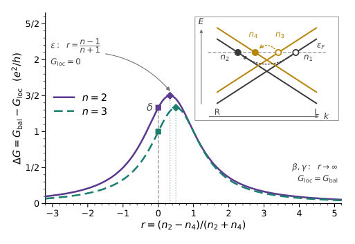
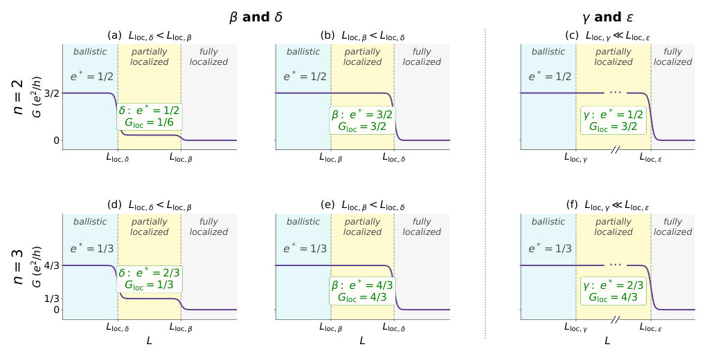
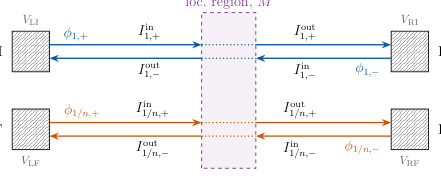
Summary. This theoretical work analyzes how edge states in fractional topological insulators (FTIs) behave when they partially localize. By applying K-matrix formalism, the authors derive unique conductance signatures for three distinct localization channels. This provides a powerful experimental diagnostic tool, allowing researchers to identify the specific physical state of the FTI edge based on transport measurements.
Why it may be interesting. The detailed analysis of edge transport in fractional topological systems provides concrete, measurable signatures (conductance vs. charge) that can be compared against experimental measurements in moiré materials, linking abstract topological theory to observable transport physics.
Main problem. The study investigates the transport properties of edges in fractional topological insulators (FTIs) when partial localization occurs.
Main result. The combination of measured edge conductance and the minimal quasiparticle charge provides a unique fingerprint to distinguish between three distinct partially localized edge phases.
Method. The authors use Wen's K matrix formalism to derive the reduced edge theory for different localization channels, calculating the resulting scattering matrices and conductances.
Model / system. The system is an FTI realized in van der Waals moiré materials, characterized by filling factors $\nu_{\text{FTI}} = 2(1\pm 1/n)$. The edge theory involves analyzing the coupling between integer and fractional bosonic fields.
Key observables. Edge conductances ($G$), minimal quasiparticle charge ($Q_m$), and the four-terminal conductance matrix ($G$).
Important parameters / regimes. Filling factor $\nu_{\text{FTI}}$, integer $n \geq 2$, and the specific localization channels (e.g., backscattering, two-electron tunneling, superconductivity).
Assumptions / limitations. Time-Reversal Symmetry (TRS) is preserved, and the analysis relies on the assumption of separate contactability for integer and fractional mode pairs.
Figures summary. The notes detail the derivation of scattering matrices ($S$) and conductance ($G$) for the three channels, showing distinct results for the four-terminal conductance matrices.
Paper structure. The paper progresses from establishing the general edge theory using K-matrices, to analyzing the conditions for partial localization, and finally calculating the specific conductances and fingerprints for the three identified channels.
Recent experiments in van der Waals moiré materials have reported realizations of two-dimensional fractional topological insulators (FTIs). We study transport properties of FTI edges at filling factors $ν_{\text{FTI}} = 2(1\pm 1/n)$ with integer $n \geq 2$ (even or odd), each of which supports four counter-propagating edge modes. The edge modes can undergo partial localization, leaving two of the four edge modes conducting. We identify three distinct partial-localization channels and, for each channel, determine the reduced theory describing the remaining conducting modes, from which we obtain the minimal quasiparticle charge. We further explore transport properties of each partially localized phase and in particular determine the corresponding edge conductances. We demonstrate that measurements of the conductance together with the minimal quasiparticle charge provide a fingerprint that uniquely distinguishes the three partially localized phases.
Authors: Jack Eckstein, Kyle P. Kelley, William Prudnick, Jon-Paul Maria, Stephen Jesse, Neus Domingo, Rama K. Vasudevan
Type: experiment · Category: other · PDF: https://arxiv.org/pdf/2608.23305v1
Analysis basis: full PDF text, analyzed in chunks
Topic relevance: quantum measurements 2/5 · Frenkel-Kontorova 1/5 · driven-dissipative phase transition 1/5 · non-equilibrium universality 1/5
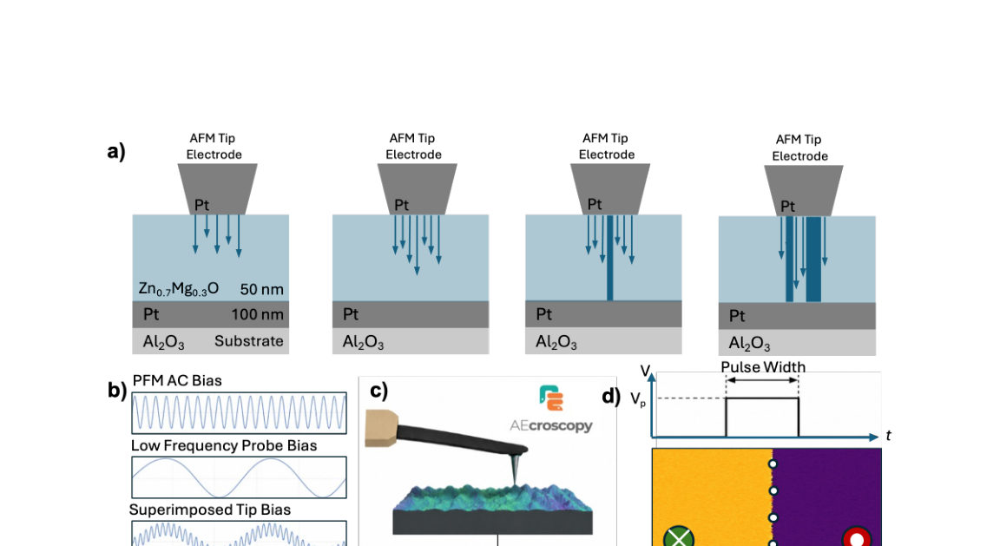
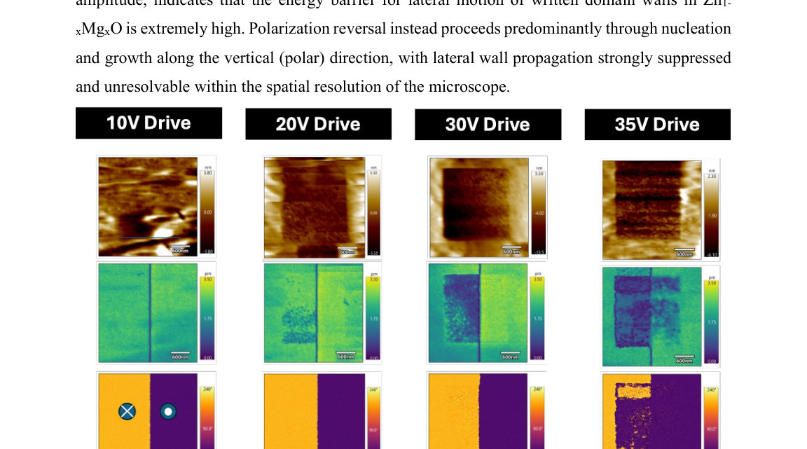
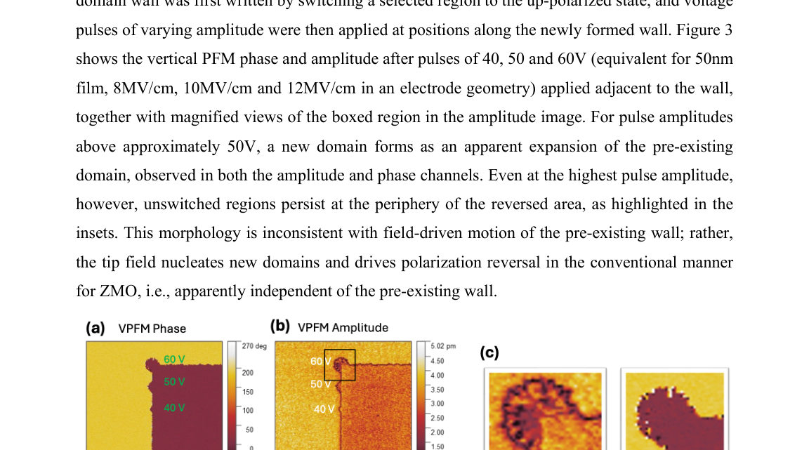
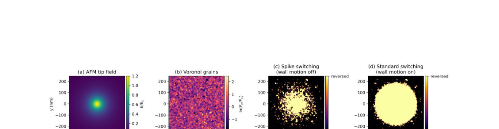
Summary. This work investigates the mechanism of ferroelectric switching in $ ext{Zn}_{1-x} ext{Mg}_x ext{O}$ thin films, finding that the process is governed by nucleation rather than the lateral movement of domain walls. Using advanced microscopy and modeling, the authors demonstrate that domain walls exhibit negligible mobility, establishing a new, nucleation-dominated switching mechanism for wurtzite ferroelectrics.
Why it may be interesting. While the core physics is ferroelectrics, the rigorous, quantitative measurement of domain wall dynamics using advanced microscopy techniques (SO-PFM) and the comparison to theoretical models of phase transitions make it relevant to understanding non-equilibrium dynamics in condensed matter.
Main problem. The study compares the mechanisms of polarization reversal (switching) in wurtzite ferroelectrics ($ ext{Zn}_{1-x} ext{Mg}_x ext{O}$) versus classical perovskite ferroelectrics.
Main result. Polarization reversal in $ ext{Zn}_{1-x} ext{Mg}_x ext{O}$ is found to be dominated by the nucleation of vertically extended columnar filaments, as lateral domain wall mobility is negligible ($<10 ext{nm}$).
Method. The research employs advanced local characterization techniques, including scanning oscillator microscopy and point pulse-imaging, complemented by detailed simulations.
Model / system. The system is $ ext{Zn}_{1-x} ext{Mg}_x ext{O}$ thin films, which are wurtzite ferroelectrics. The analysis contrasts their switching behavior with that of perovskites, modeling the switching process as nucleation-controlled rather than growth-mediated.
Key observables. Local switching events, domain wall responses, lateral domain wall displacement, and the comparison of switching kinetics between wurtzite and perovskite systems.
Important parameters / regimes. Lateral domain wall mobility (shown to be sub 10 nm), coercive field, and grain size (mean size $\sim 10 ext{ nm}$).
Assumptions / limitations. The simulations often neglect elastic and depolarization effects, and the analysis of wall position relies on subtracting electrostatic contributions from the raw measurement signal.
Figures summary. Figures demonstrate that when lateral wall motion is disabled in simulations, the results match experimental observations of multiple unswitched grains, supporting the nucleation-dominated model.
Paper structure. The paper establishes the fundamental difference in switching mechanisms between perovskites (growth-dominated) and wurtzites. It then uses SO-PFM and pulse-probe methods to experimentally prove the lack of lateral wall movement in $ ext{Zn}_{1-x} ext{Mg}_x ext{O}$, culminating in simulations that confirm nucleation-limited switching.
Polarization reversal in ferroelectrics arises from the coupled processes of domain nucleation and subsequent growth, yet the governing mechanisms differ fundamentally between classical perovskite oxides and emerging wurtzite ferroelectrics. While switching in perovskites is typically governed by mobile domain walls whose field-driven propagation dominates macroscopic kinetics, here we show that polarization reversal in wurtzite Zn1-xMgxO proceeds through a qualitatively different pathway. Using scanning oscillator microscopy, in combination with point pulse-imaging methods, we directly map local switching events and domain wall responses, revealing that domain walls in Zn1-xMgxO exhibit negligible lateral mobility (sub 10nm) and that polarization reversal proceeds predominantly through the nucleation of vertically extended columnar filaments with a lateral size on the order of the grains. This nucleation-controlled switching contrasts sharply with the growth-mediated dynamics characteristic of perovskite ferroelectrics and explains the abrupt, spatially localized switching behavior observed in wurtzite systems. These results establish nucleation-dominated filamentary reversal as a defining switching mechanism in Zn1-xMgxO and point towards the need for further studies to understand correlation lengths and nucleation processes across a range of grain sizes.
Authors: Surajit Mandal, Asim Kumar Ghosh
Type: theory · Category: statistical mechanics · PDF: https://arxiv.org/pdf/2608.22875v1
Analysis basis: full PDF text, analyzed in chunks
Topic relevance: analog quantum simulation 2/5 · Frenkel-Kontorova 1/5 · quantum measurements 1/5
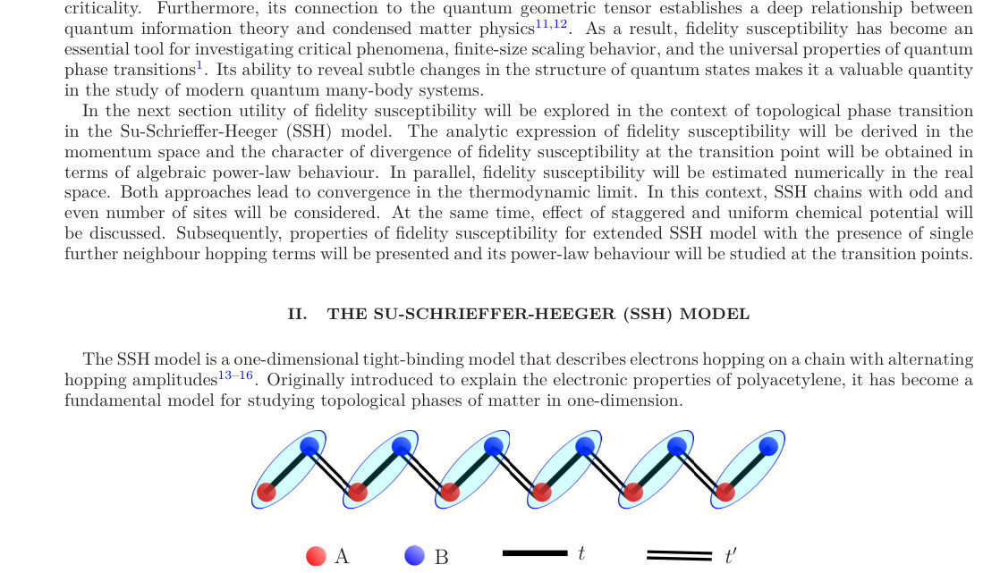
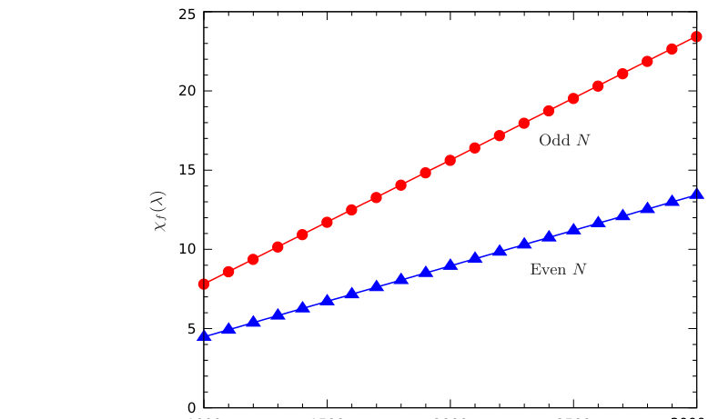
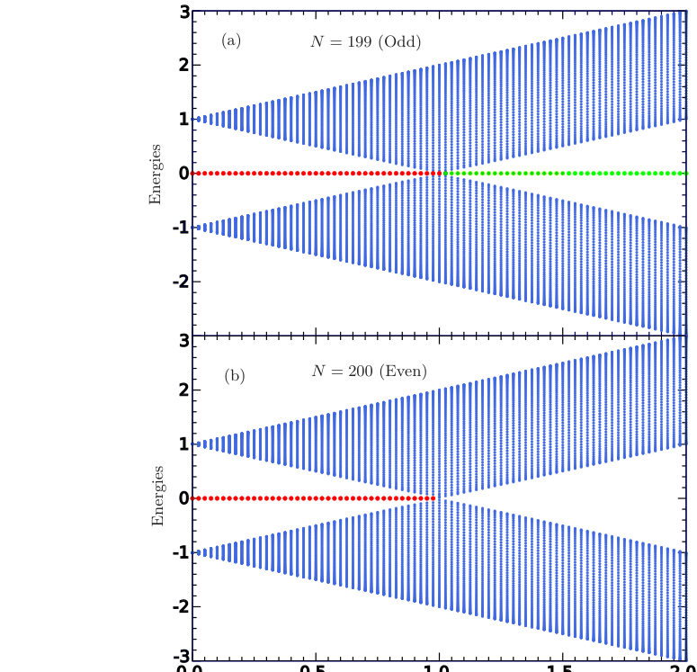
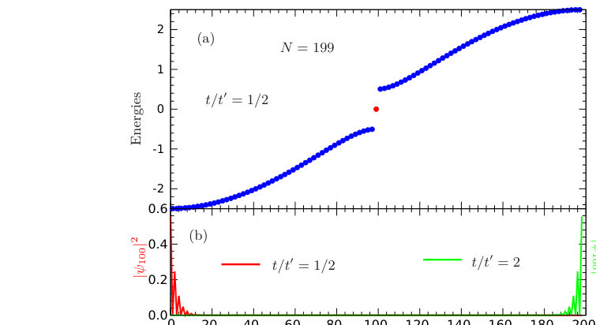
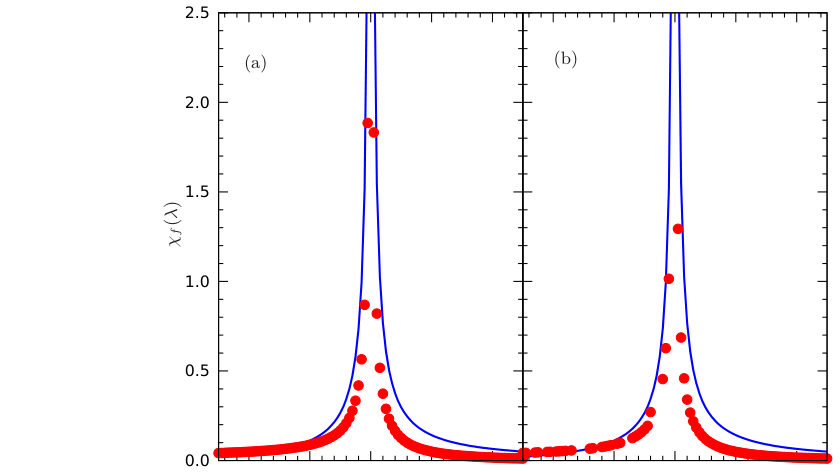
Summary. This work applies fidelity susceptibility to study the topological phase transition in the Su-Schrieffer-Heeger model augmented with a further neighbour hopping term. The divergence of $\chi_f$ at critical points confirms the phase transition, and the scaling analysis shows the fundamental physics remains consistent with the standard SSH model. This provides a robust diagnostic tool for characterizing quantum critical points in 1D topological systems.
Why it may be interesting. The use of fidelity susceptibility as a diagnostic tool for topological phase transitions is a powerful, non-local measure applicable to many quantum systems, making it relevant for understanding critical points in condensed matter models.
Main problem. The study investigates the topological phase transition in the Su-Schrieffer-Heeger (SSH) model when augmented with a further neighbour hopping term.
Main result. The fidelity susceptibility ($\chi_f$) is found to diverge at the phase transition points, and the scaling exponent obtained numerically agrees with that of the standard SSH model.
Method. The analysis uses the fidelity susceptibility, derived from the overlap matrix of single-particle eigenstates, to detect quantum critical points.
Model / system. The system is the SSH model, a 1D tight-binding model, extended by adding a further neighbour hopping term. The Hamiltonian is analyzed in both momentum space and for finite chains with open boundary conditions.
Key observables. Fidelity susceptibility ($\chi_f$), which is sensitive to parameter variations and diverges at phase transitions.
Important parameters / regimes. The control parameter is $\lambda = t/t'$, and the study explores the effect of staggered potentials ($\mu$) and the strength of the further neighbour hopping term ($t_0$).
Assumptions / limitations. The analysis relies on the non-interacting fermionic nature of the system, allowing the use of Slater determinants for calculating fidelity.
Figures summary. Figures illustrate the energy spectrum under different perturbations (staggered potential, FN hopping) and show the variation of $\chi_f(\lambda)$ near the transition points, demonstrating divergence.
Paper structure. The paper first establishes the use of fidelity susceptibility to locate phase transitions in the standard SSH model. It then extends the analysis to include a further neighbour hopping term, deriving analytic and numerical expressions for $\chi_f$ to confirm the transition points and analyze scaling behavior.
In this study, topological phase transition in Su-Schrieffer-Heeger (SSH) model with a further neighbour hopping term has been studied in terms of fidelity susceptibility. Topological phase transition point in the standard SSH model has been identified before by noting the divergence of fidelity susceptibility. The same approach has been employed here where fidelity susceptibility is found to diverge at the phase transition points. Additionally, effect of staggered potential on the fidelity susceptibility has been explored. Analytic expression for fidelity susceptibility has been obtained along with its numerical estimation on finite chains by exact diagonalization. Fidelity susceptibility exhibits sharp peaks at the phase transition points in both approaches. Scaling exponent of this divergence has been obtained numerically which is found to agree to that of the standard SSH model without further neighbour terms.
Authors: J. Bemis, R. Proksch
Type: experiment · Category: other · PDF: https://arxiv.org/pdf/2608.21528v1
Analysis basis: full PDF text, analyzed in chunks
Topic relevance: quantum measurements 2/5 · driven-dissipative phase transition 1/5 · interference shaping light 1/5



Summary. This paper introduces iDART, a novel technique for Contact-Resonance AFM that overcomes limitations from excitation artifacts. By combining advanced interferometry with two-frequency tracking, the method achieves high sensitivity. Crucially, it demonstrates that the contact resonance frequency can be measured robustly using only thermal (Brownian) motion, enabling high-resolution imaging without perturbing the sample with large electrical biases.
Why it may be interesting. While focused on classical mechanics, the ability to extract a stable, low-noise signal (frequency) from a system where the primary measurement signal (amplitude/phase) vanishes due to external driving mimics the challenge of measuring weak quantum signals in the presence of strong classical noise or decoherence.
Main problem. Conventional Contact-Resonance AFM methods are limited by excitation artifacts or the need for averaging incompatible with routine imaging.
Main result. The proposed iDART technique successfully enables resonance-enhanced, drive-free nanomechanical imaging by showing that contact resonance frequency contrast persists even when electrical driving signals vanish.
Method. The authors introduce Interferometric Dual-AC Resonance Tracking (iDART), combining quadrature-phase differential interferometry with two-frequency resonance tracking.
Model / system. The experiment uses a cantilever tip interacting with a sample surface to measure local mechanical properties via contact resonance. The measurement system employs interferometry and active electrical/photothermal excitation.
Key observables. Contact stiffness, dissipation, electromechanical response, amplitude contrast, phase contrast, and contact-resonance frequency.
Important parameters / regimes. AC bias amplitudes (ranging from 400 mV down to 0 mV), photothermal modulation powers, and separation between drive tones ($\Delta f$).
Assumptions / limitations. The frequency measurement is robust and determined by local dynamic boundary conditions, independent of the coherent excitation source.
Figures summary. Figures illustrate the iDART setup using two drive tones and a reference tone. Key comparisons show that frequency maps remain stable at zero bias, while amplitude/phase maps vanish, confirming the robustness of the frequency measurement.
Paper structure. The paper introduces the limitations of existing CR-AFM techniques, details the iDART methodology combining interferometry and dual-AC tracking, presents experimental results comparing driven vs. thermally driven measurements, and concludes by establishing the technique's practical utility.
Contact-resonance atomic force microscopy (CR-AFM) provides nanoscale maps of contact stiffness, dissipation, and electromechanical response, but conventional piezoacoustic excitation can obscure the cantilever resonance with actuator and sample-holder modes. Pure Brownian excitation avoids this transfer-function background, yet its small amplitude generally requires averaging that is incompatible with routine imaging. We introduce interferometric dual-AC resonance tracking (iDART), which combines quadrature-phase differential interferometry with two-frequency resonance tracking. By positioning the interferometric spot near the displacement maximum of the first contact-resonance mode, the detector noise floor is reduced below the off-resonance thermal displacement of the cantilever. Brownian spectra identify the contact mode and define the tracking frequencies, while active electrical excitation provides the signal-to-noise ratio required for pixel-resolved imaging. Simultaneous low-frequency and resonant measurements show that both electrical and photothermal drive increases contrast in the amplitude and phase channels without appreciably shifting the contact resonance. These results establish a practical route to resonance-enhanced, drive free nanomechanical imaging at conventional AFM scan rates.
Authors: Yasuo Oda, Jason P. Kestner
Type: theory · Category: quantum information and computing · PDF: https://arxiv.org/pdf/2608.21542v1
Analysis basis: full PDF text, analyzed in chunks
Topic relevance: QC/QI experiment 2/5 · quantum measurements 1/5
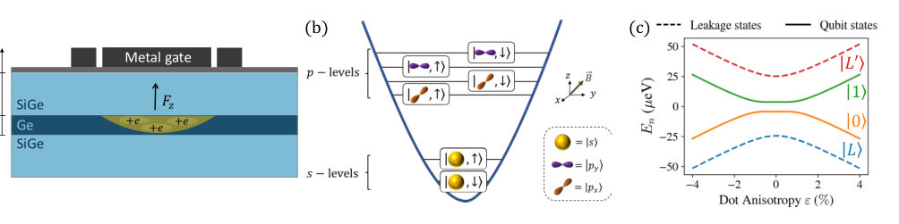
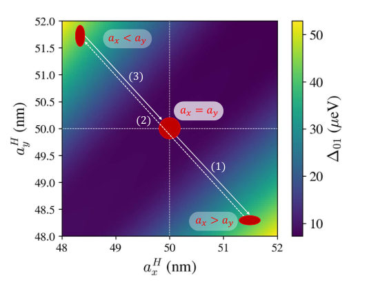
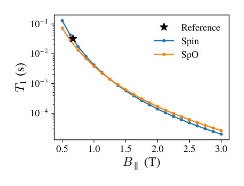
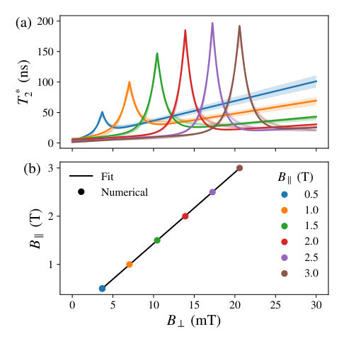
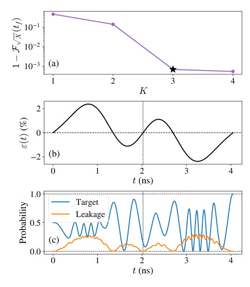
Summary. This paper introduces a noise-robust qubit platform using the spin-p-orbital (SpO) manifold in a Germanium hole quantum dot. By operating at specific isotropic points, the qubit's energy splitting becomes insensitive to charge noise fluctuations. The authors further demonstrate the feasibility of implementing fast, high-fidelity quantum gates using purely electrical control techniques like adiabatic shuttling.
Why it may be interesting. This work provides a detailed, physics-based blueprint for realizing solid-state qubits, directly addressing noise mitigation and gate implementation using established semiconductor heterostructures, which is highly relevant to quantum computing hardware.
Main problem. The primary challenge addressed is mitigating charge noise, a major obstacle for semiconductor quantum computation using Germanium hole qubits.
Main result. The authors propose encoding a qubit in a spin-p-orbital (SpO) manifold, demonstrating robustness against charge noise at specific isotropic operating points and designing all-electrical protocols for fast, high-fidelity quantum gates.
Method. The work involves developing an effective Hamiltonian within a four-band Luttinger-Kohn–Bir-Pikus framework, characterizing noise sweet spots, and optimizing gate sequences using adiabatic shuttling and state-transfer protocols.
Model / system. The system is a three-hole quantum dot fabricated in a planar Ge/SiGe heterostructure. The qubit is encoded in the $p$-shell of the topmost hole, modeled using a Luttinger-Kohn–Bir-Pikus Hamiltonian incorporating strain and electrostatic confinement.
Key observables. Qubit splitting ($\Delta_{01}$), coherence times ($T_2^*$), gate infidelity ($1 - F_{ ext{ZZ}}$), and the noise variance ($\langle\sigma angle$).
Important parameters / regimes. The operating regime is the isotropic point ($\epsilon \approx 0$), and noise levels are targeted around $3 \mu ext{eV}$ based on material parameters.
Assumptions / limitations. The analysis relies on a shell-filling approximation that treats the lowest two holes as an inert core, and the gate optimization uses a smooth flat-top ansatz.
Figures summary. Figures illustrate the energy level structure showing the qubit in the p-shell, the dependence of the qubit splitting on confinement anisotropy ($\epsilon$), and comparisons between different gate optimization techniques (GRAPE vs. flat-top ansatz).
Paper structure. The paper progresses from identifying charge noise as the bottleneck, to proposing the SpO qubit encoding and analyzing its noise robustness via sweet spot characterization. It then details all-electrical gate protocols, including Landau-Zener state transfer and two-qubit entangling gates via adiabatic shuttling.
Germanium hole spin qubits are a leading platform for semiconductor quantum computation due to their strong spin-orbit coupling, all-electrical operability, and absence of valley degeneracy. A central obstacle is charge noise, which couples to the qubit through the same spin-orbit interaction that enables fast electrical control. In this work, we propose a new operational mode of a three-hole quantum dot in a planar Ge/SiGe heterostructure, modeled within a four-band Luttinger-Kohn--Bir-Pikus framework: a spin-$p$-orbital (SpO) qubit encoded in the $p$-shell of the topmost hole. We characterize charge noise sweet spots in the parameter space of electrostatic confinement and magnetic field, and estimate that relaxation rates of the SpO qubit are comparable to those of spin qubits hosted in single holes. We then design and optimize an all-electrical Landau-Zener state-transfer protocol that induces logical qubit state transitions without microwave driving, and we show that the quadrupole-quadrupole Coulomb interaction between neighboring dots enables fast two-qubit entangling gates operated by adiabatic shuttling.
Authors: Haolin Huang, Jackson S. Smith, Fabio Taddei, Michele Governale, Jared H. Cole
Type: theory · Category: other · PDF: https://arxiv.org/pdf/2608.22831v1
Analysis basis: full PDF text, analyzed in chunks
Topic relevance: analog quantum simulation 2/5
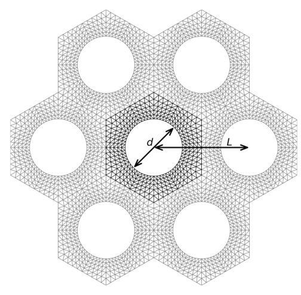
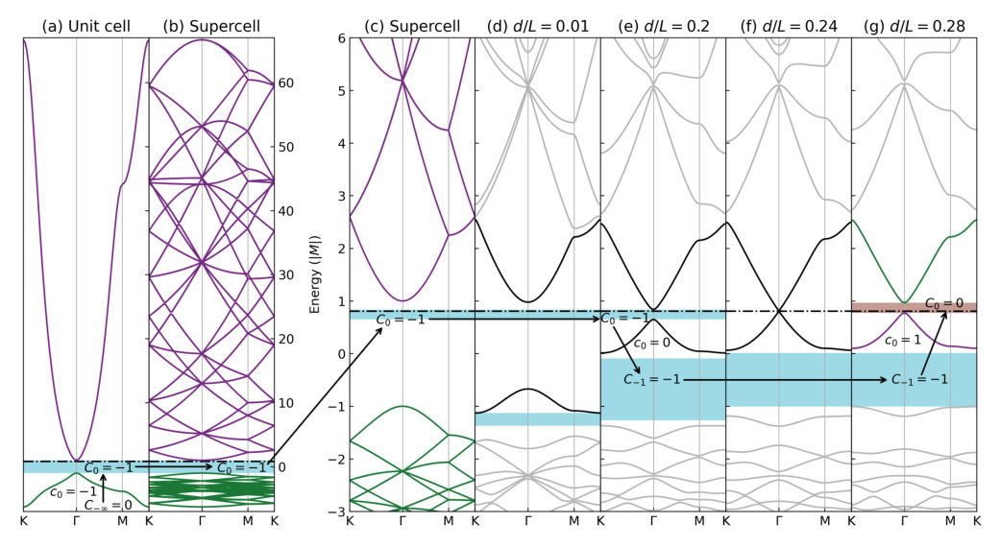
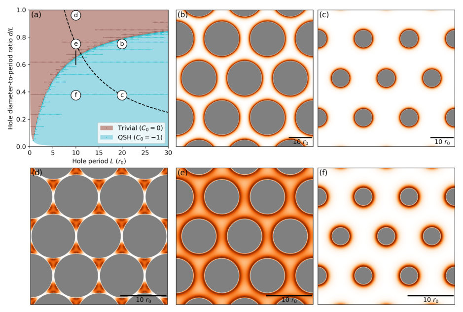
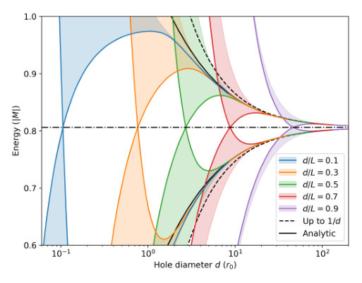
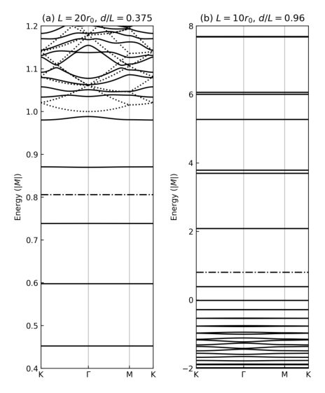
Summary. This paper theoretically investigates the electronic properties of topological insulators patterned with antidots. Using advanced numerical methods on the BHZ model, the authors show that the topological state can be destroyed by controlling the overlap of edge states between adjacent holes. This work highlights the potential for lithographically patterned TIs in future quantum electronics.
Why it may be interesting. The work demonstrates how engineered nanoscale patterns can fundamentally alter the topological properties of quantum materials, providing a blueprint for designing novel electronic devices.
Main problem. The study investigates how patterning a two-dimensional topological insulator (TI) with an array of circular holes (antidots) affects its electronic properties and topological character.
Main result. The material loses its topological character and becomes a trivial insulator when the holes are close together and the edge states overlap significantly, demonstrating a phase transition from the Quantum Spin Hall (QSH) state.
Method. Calculations utilize the Bernevig-Hughes-Zhang (BHZ) model, solved using the Finite Element Method (FEM) for discretization, and the band topology is analyzed using the Fukui-Hatsugai-Suzuki (FHS) method.
Model / system. The physical system is a 2D topological insulator patterned into a superlattice of circular holes (antidots). The effective Hamiltonian is modeled by the BHZ model, and the geometry is treated using FEM.
Key observables. Spin Chern number, quantized Hall conductance, and the energy levels of localized edge states.
Important parameters / regimes. Hole period ($L$) and the ratio of hole diameter to period ($d/L$).
Assumptions / limitations. The geometry is treated as smooth due to the large feature size relative to the underlying crystal lattice constant, and the BHZ model serves as the effective continuum Hamiltonian.
Figures summary. Figures illustrate the phase diagram mapping the transition between trivial and QSH phases based on hole parameters, and show the localization of edge states in the QSH phase versus delocalization in the trivial phase.
Paper structure. The paper progresses from defining the physical system and model to calculating topological invariants (Chern number) and finally mapping out a phase diagram that predicts the loss of topological order upon hole overlap.
We investigate the electronic properties of a two-dimensional topological insulator patterned with an array of circular holes. The band structures of the topological insulator superlattices are calculated using the Bernevig-Hughes-Zhang model, discretized with the finite element method. The band topology is studied using the Fukui-Hatsugai-Suzuki method, exploiting the fact that topological charge is conserved when a band gap closes and reopens. We find that when the holes are close to each other and the edge states overlap significantly, the material loses its topological character and becomes a trivial insulator. The results show that patterning topological insulators changes their properties, and this can be achieved with a feature size compatible with current lithographic techniques. This shows the potential to incorporate patterned topological insulators in future electronics.
Authors: Yichen Hua, Wen-lin Yang, Jian-Jian Miao, Hu Xu, Changming Yue
Type: theory · Category: strongly correlated electrons · PDF: https://arxiv.org/pdf/2608.23467v1
Analysis basis: full PDF text, analyzed in chunks
Topic relevance: Keldysh / 2PI / non-Gaussian methods 2/5
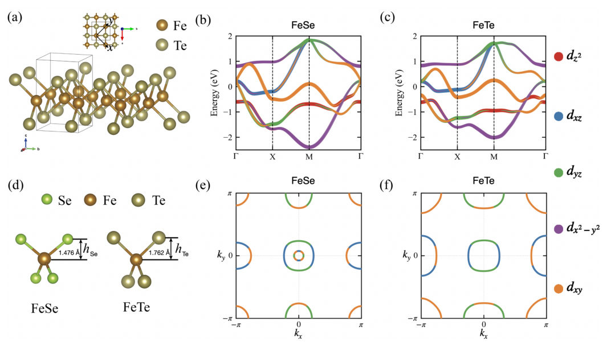
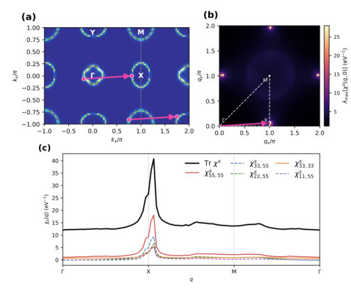
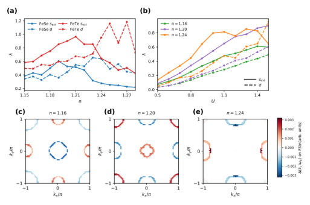
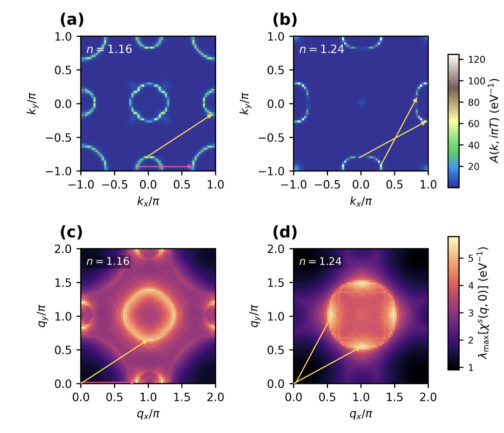
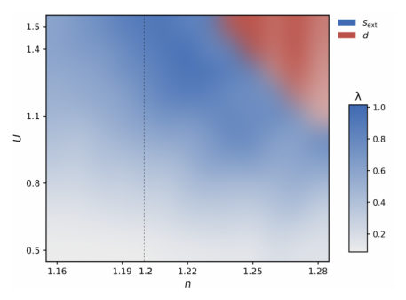
Summary. This theoretical study analyzes the superconducting pairing mechanism in $\mathrm{FeTe}$ using a five-orbital tight-binding model and the FLEX approximation. It reveals a strong competition between extended-$s$-wave and $d_{x^2-y^2}$-wave pairing symmetries. The favored symmetry switches depending on the doping level, providing concrete gap structures for comparison with spectroscopic measurements.
Why it may be interesting. While focused on iron pnictides, the methodology of using fluctuation-exchange theory to map out competing pairing symmetries based on Fermi surface nesting is a general technique for understanding unconventional superconductivity in correlated electron systems.
Main problem. The paper investigates the competing superconducting pairing symmetries (extended-$s$-wave vs. $d_{x^2-y^2}$-wave) in stoichiometric and doped $\mathrm{FeTe}$.
Main result. The dominant pairing symmetry is highly dependent on doping: extended-$s$-wave is favored near stoichiometry, while $d_{x^2-y^2}$-wave becomes leading upon electron doping.
Method. The pairing instabilities are determined by solving the linearized Eliashberg equation within the fluctuation-exchange (FLEX) approximation.
Model / system. The study uses an experimentally constrained five-orbital tight-binding model for the tetragonal 11-type chalcogenide $\mathrm{FeTe}$. Electronic correlations are treated via a local Hubbard-Kanamori interaction Hamiltonian.
Key observables. Pairing tendency ($\lambda$), gap function ($\Delta(\mathbf{k})$), and spin/charge susceptibilities ($\hat{\chi}_{\mathrm{C/S}}(\mathbf{q})$).
Important parameters / regimes. Doping level ($n$), interaction strength ($U$), and momentum transfer vectors $\mathbf{q}$ near $(\pi, 0)$, $(0, \pi)$, and $(\pi, \pi)$.
Assumptions / limitations. The model neglects interlayer hoppings along the z-direction, and the pairing is analyzed within the spin-singlet channel approximation.
Figures summary. Figures illustrate the Fermi surface topology, spin susceptibility peaks related to nesting vectors, and the calculated gap functions for different doping regimes.
Paper structure. The work proceeds by constructing a tight-binding model, applying the FLEX approximation to calculate spin fluctuations, and then solving the Eliashberg equation to map out the competing $s$-wave and $d$-wave pairing instabilities as a function of doping.
The recent observation of superconductivity in stoichiometric $\mathrm{FeTe}$ raises the question of how pairing develops in this tetragonal 11-type chalcogenide once interstitial Fe is removed. We construct an experimentally constrained five-orbital tight-binding model from first-principles calculations and treat electronic correlations and pairing within the fluctuation-exchange approximation. The linearized Eliashberg equation yields competing extended-$s$- and $d_{x^2-y^2}$-wave spin-singlet pairing instabilities. Near stoichiometric filling, spin fluctuations near $(π,0)$ and $(0,π)$ in the unfolded one-Fe Brillouin zone connect the $Γ/M$ hole pockets with the $X/Y$ electron pockets and favor an extended-$s$ gap that changes sign between the hole and electron sheets. Upon electron doping, depletion of the hole pockets shifts the dominant scattering toward the $X$--$Y$ channel near $(π,π)$, making the $d_{x^2-y^2}$-wave state the leading instability, with nodal lines that avoid most of the Fermi surface. The relative strengths of the two pairing channels vary with filling and interaction strength as the dominant spin-fluctuation channel changes. Under matched interaction strength, temperature, and filling, the extended-$s$ eigenvalue is larger in $\mathrm{FeTe}$ than in $\mathrm{FeSe}$ throughout the range considered, while the $d_{x^2-y^2}$-wave eigenvalue is also generally larger, particularly under electron doping. These results give concrete gap structures against which spectroscopic measurements of stoichiometric $\mathrm{FeTe}$ can be compared.
Authors: E. Kirkinis, A. Levchenko
Type: theory · Category: other · PDF: https://arxiv.org/pdf/2608.22958v1
Analysis basis: full PDF text, analyzed in chunks
Topic relevance: Frenkel-Kontorova 1/5 · Keldysh / 2PI / non-Gaussian methods 1/5 · analog quantum simulation 1/5 · correlated / nonlocal dissipation 1/5 · driven-dissipative phase transition 1/5 · methods for driven-dissipative 1/5 · non-equilibrium universality 1/5 · quantum measurements 1/5
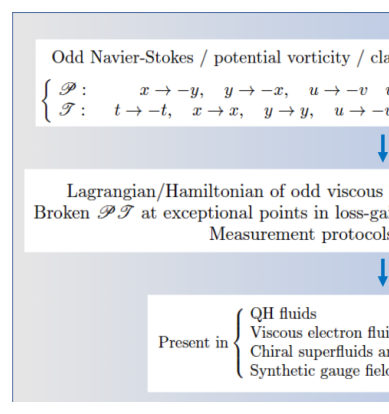
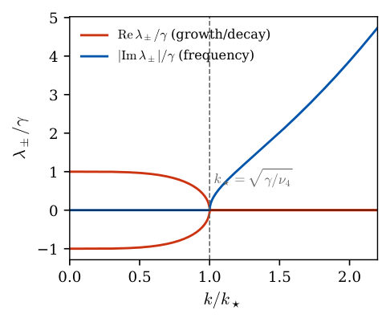
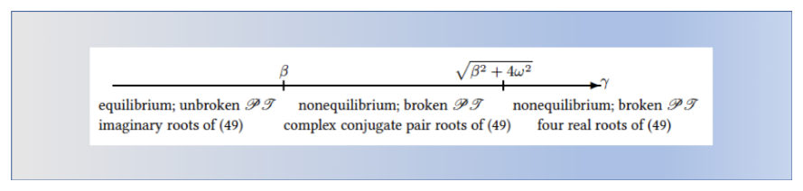
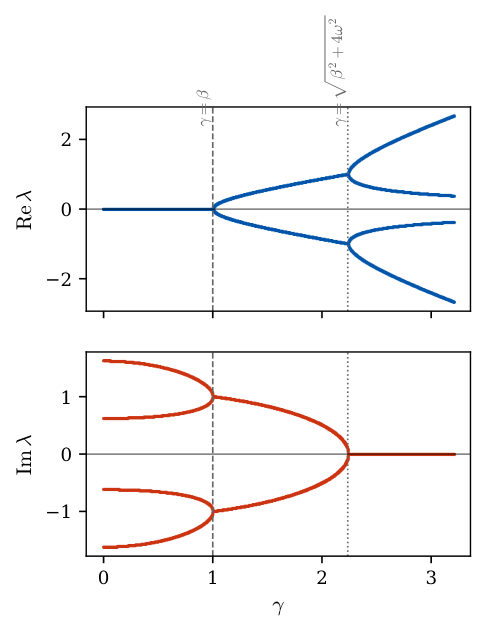
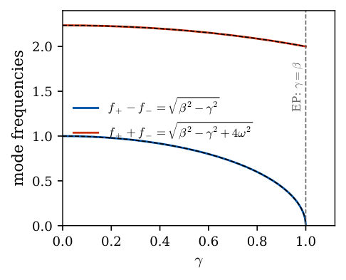
Summary. This paper introduces a novel method to measure 'odd viscosity' in time-reversal-broken fluids by leveraging the mathematical structure of Parity-Time ($\mathscr{PT}$) symmetry. By showing that the governing equations are $\mathscr{PT}$-symmetric, the authors derive protocols—both classical and quantum—that use phenomena like exceptional points to achieve highly sensitive measurements of this otherwise unmeasurable transport coefficient.
Why it may be interesting. The application of $\mathscr{PT}$-symmetry, a concept central to quantum optics and open quantum systems, to classical fluid dynamics and transport coefficients provides a novel diagnostic tool for measuring non-dissipative fluid properties.
Main problem. The primary challenge is measuring 'odd viscosity,' which is a nondissipative component of viscous response that does no work, making it experimentally elusive.
Main result. The authors establish that the odd Navier-Stokes equations are $\mathscr{PT}$-symmetric, providing mechanical, stochastic, and spectroscopic protocols to measure this odd transport coefficient.
Method. The analysis uses the framework of $\mathscr{PT}$-symmetry, linearizing the fluid dynamics equations into forms resembling the Schrödinger equation or master equations for coupled oscillators.
Model / system. The study models odd viscous liquids using modified Navier-Stokes equations in 2D and 3D, and analyzes the behavior of trapped probes modeled as coupled oscillators.
Key observables. Odd viscosity ($\eta_o$), potential vorticity, exceptional points, and Rabi sidebands.
Important parameters / regimes. The odd friction coefficient ($\beta$), gain ($\gamma$), and the critical wavenumber ($k^*$).
Assumptions / limitations. The analysis relies on the existence and properties of $\mathscr{PT}$-symmetry within the fluid dynamics framework.
Figures summary. Figure 2 illustrates the $\mathscr{PT}$ transition of transverse waves, showing how the system transitions between broken and unbroken $\mathscr{PT}$ symmetry based on the wavenumber $k$.
Paper structure. The paper establishes the $\mathscr{PT}$ symmetry of the odd Navier-Stokes equations, analyzes the behavior of coupled odd oscillators, and extends the framework to quantum systems exhibiting Fock-Darwin spectra and Liouvillian exceptional points.
Odd viscosity, the nondissipative part of the viscous response of a time-reversal-broken fluid, is notoriously difficult to measure precisely because it does no work. Here we show that parity-time ($\mathscr{PT}$) symmetry, familiar from non-Hermitian optics, converts this elusiveness into a measurement principle. The odd Navier-Stokes equations, that include the nonlinear inertial terms, are $\mathscr{PT}$-symmetric, follow from a Lagrangian, and linearize to a Schrödinger equation in which the odd viscosity plays the role of Planck's constant; potential vorticity obeys a generalized Ertel conservation law. A probe trapped in an odd liquid realizes a pair of oscillators coupled by odd friction, and supplying balanced loss and gain drives a twofold $\mathscr{PT}$ transition whose exceptional point and Rabi sidebands locate the odd viscosity with square-root-enhanced sensitivity. Upon quantization the spectrum is of Fock-Darwin form, and the dissipative pair exhibits a Liouvillian exceptional point separating linear from exponential heating. These results furnish mechanical, stochastic, and spectroscopic protocols for measuring odd transport coefficients in classical and quantum fluids.
Authors: Man Suk Song, Lothar Houben, Jean Souza, Edanel Fishbein, Moshe Haim, Ambikesh Gupta, Yufei Zhao, Anna-Eden Kossoy, Binghai Yan, Haim Beidenkopf, Hadas Shtrikman
Type: both · Category: other · PDF: https://arxiv.org/pdf/2608.22989v1
Analysis basis: full PDF text, analyzed in chunks
Topic relevance: analog quantum simulation 1/5
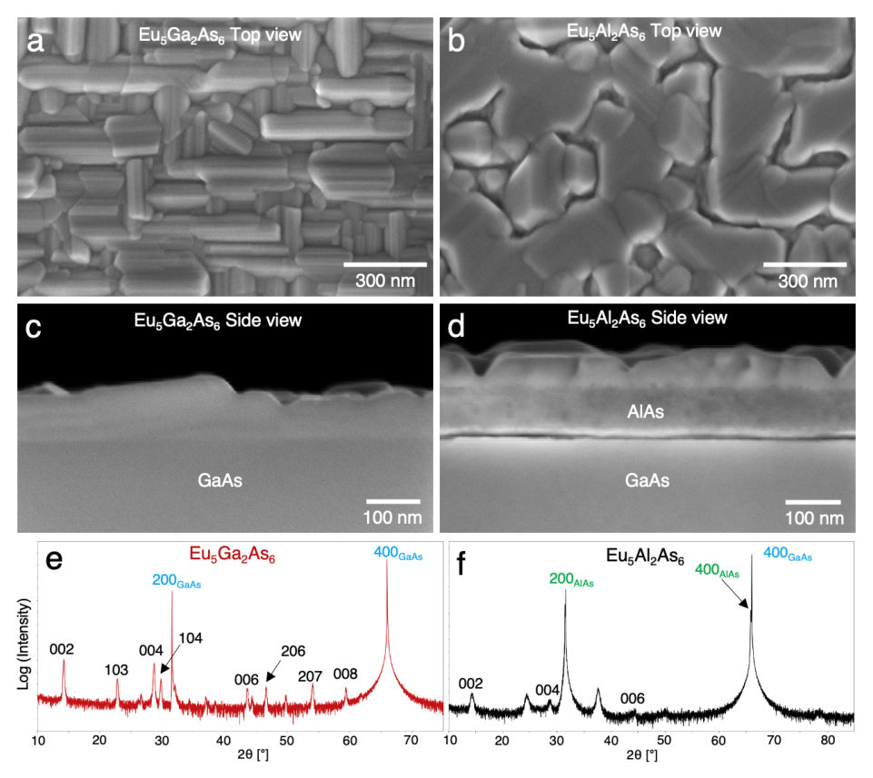
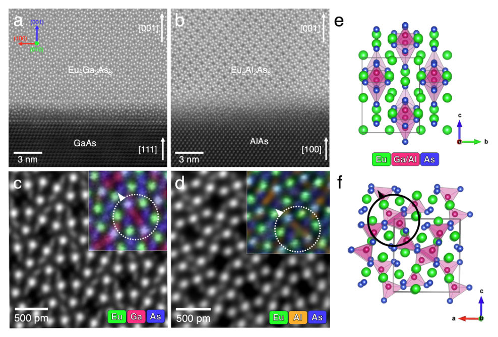
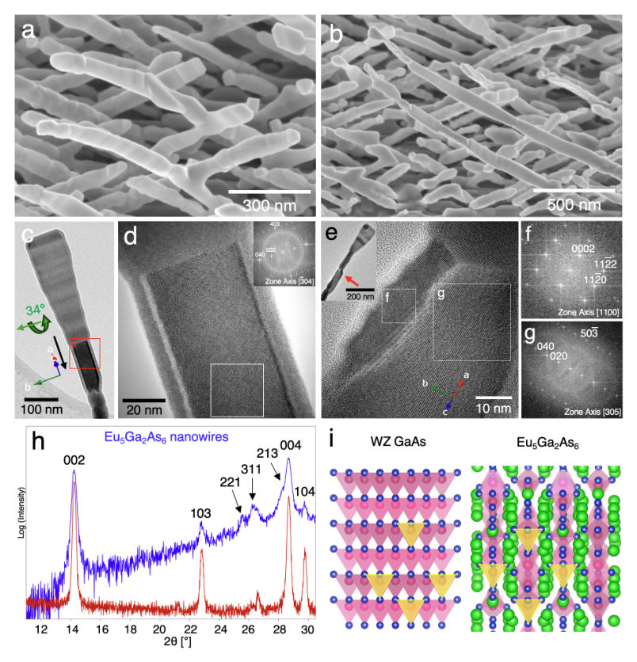
Summary. This work reports the successful synthesis of novel Zintl compounds, Eu5Ga2As6 and Eu5Al2As6, by growing them epitaxially from III-V semiconductor substrates. The research characterizes their unique crystal structures, complex magnetic ordering, and semiconducting nature, establishing a new, scalable route for creating functional magnetic thin films and nanowires.
Why it may be interesting. While focused on solid-state materials, the study of magnetic phase transitions (AFM/CAFM) and the coupling between structure and magnetism touches upon concepts relevant to correlated electron systems and emergent quantum phenomena in condensed matter.
Main problem. The research aims to discover and synthesize new Zintl films and nanowires by extending the topotactic conversion methodology from III-V semiconductors.
Main result. Two new Zintl compounds, Eu5Ga2As6 and Eu5Al2As6, were successfully grown, exhibiting complex magnetic ordering and predicted semiconductor gaps suitable for spintronics and thermoelectric applications.
Method. The study combines experimental techniques like Molecular Beam Epitaxy (MBE), STEM-HAADF imaging, and magnetic measurements with theoretical predictions from ab initio calculations.
Model / system. The physical system involves Zintl phases, which are synthesized by converting the crystal structure of parent III-V semiconductors (like GaAs or AlAs) into the desired Zintl framework.
Key observables. Crystal structure (Pnma space group), electronic band gaps (0.79 eV and 0.90 eV), magnetic transitions (AFM, CAFM, spin-flop), and growth morphology (thin films and nanowires).
Important parameters / regimes. The stoichiometry of the new compounds (Eu5M2As6), the applied magnetic field strength, and the substrate orientation are key parameters.
Assumptions / limitations. The growth process is assumed to be topotactic, meaning the new structure is guided by the underlying crystal lattice of the parent semiconductor.
Figures summary. Figures show SEM/STEM images detailing the growth morphology and interface structure on various GaAs substrates, XRD scans confirming the Pnma structure, and M-H/M-T curves mapping the complex magnetic phase diagram.
Paper structure. The paper progresses by first establishing the methodology (topotactic conversion), then characterizing the growth on different substrates (morphology and structure), followed by detailed analysis of the electronic and magnetic properties, and concluding with potential applications.
Zintl phases draw broad interest for their diverse structural, magnetic, thermoelectric, topological and optical properties. Recently, Zintl Eu$_3$In$_2$As$_4$ and Eu$_5$In$_2$As$_6$ nanowires with axion magneto-topology have been synthesized by molecular beam epitaxy via topotactic conversion of InAs wurtzite and zincblende nanowires. Here we extend this methodology, demonstrating that topotaxial mutual-exchange growth applies not only to a broader set of III-V semiconductors beyond InAs but also to three-dimensional substrates whose surfaces are converted into Zintl thin films, as well as to nanowires. We report the growth of two new compounds: Eu$_5$Ga$_2$As$_6$ thin films converted from GaAs substrates, and Eu$_5$Al$_2$As$_6$ thin films from AlAs films. We also convert GaAs nanowires of both wurtzite and zincblende structures into Eu$_5$Ga$_2$As$_6$ nanowires. Though the stoichiometry is the same as in the previously reported Eu$_5$In$_2$As$_6$ case, microscopy and diffraction reveal a single-phase Pnma symmetry group rather than Pbam, highlighting symmetry-guided topotactic pathways to new Zintl frameworks. The compounds host an intricate magnetic phase diagram with three magnetic transitions, including two distinct antiferromagnetic orders and a canted antiferromagnetic phase that evolves into another antiferromagnetic phase under applied field through a spin-flop transition. Ab initio calculations predict that both Zintls are semiconductors with gaps of 0.79 eV in Eu$_5$Ga$_2$As$_6$ and 0.90 eV in Eu$_5$Al$_2$As$_6$. The lower symmetry and increased structural complexity suggest suppressed lattice thermal conductivity, pointing to thermoelectric potential alongside prospects in spintronics and detector technologies. These results give an epitaxy-compatible route for discovering and integrating magnetic Zintl thin films and nanowires directly from relevant III-V semiconductors.
Authors: Gonzalez Acosta Gaspar, Kowalski Andrés M
Type: theory · Category: other · PDF: https://arxiv.org/pdf/2608.23456v1
Analysis basis: full PDF text, analyzed in chunks
Topic relevance: analog quantum simulation 1/5
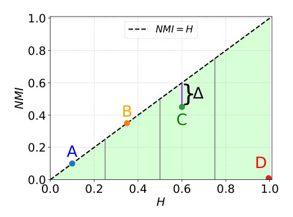
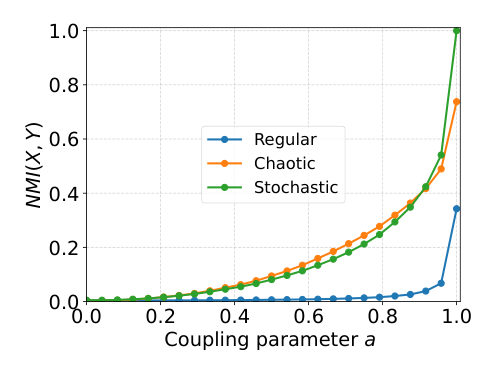
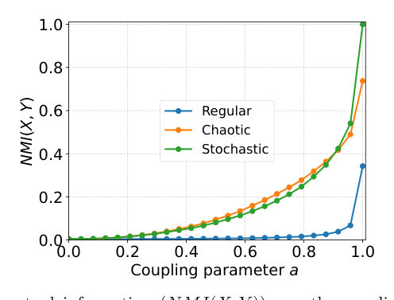
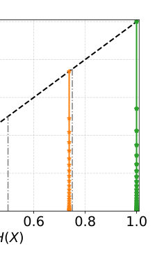
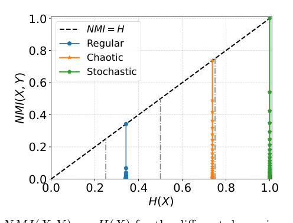
Summary. This paper introduces the Mutual Information-Entropy (NMI-H) plane, a novel tool for analyzing time series by mapping intrinsic uncertainty against shared information. It uses entropy and mutual information to characterize dynamical systems, successfully distinguishing between regular, chaotic, and stochastic behaviors. Furthermore, it quantifies information flow directionality using conditional entropy projections.
Why it may be interesting. While not directly quantum, the concept of quantifying information flow and dependence ($\Delta_x = H(X|Y)$) is fundamentally related to quantum information measures like mutual information and entanglement entropy, offering a classical analogy for analyzing system coupling.
Main problem. To develop a new two-dimensional quantifier plane for time series analysis that simultaneously characterizes the intrinsic uncertainty of a variable and the amount of information it shares with another.
Main result. The proposed NMI-H plane successfully characterizes distinct dynamical regimes (regular, chaotic, stochastic) and reveals directional information flow via conditional entropy projections.
Method. The plane combines normalized permutation entropy (H) and normalized permutation mutual information (NMI), using the difference (Delta) to quantify conditional entropy and informational independence.
Model / system. The analysis is applied to various time series representing different dynamical regimes, including regular oscillations, deterministic chaotic systems (like the logistic map), and stochastic noise.
Key observables. Normalized Permutation Entropy (H), Normalized Mutual Information (NMI), and the conditional entropy measures (Delta_x, Delta_y).
Important parameters / regimes. The coupling factor ($a$) used to construct coupled time series, and the embedding dimension used for normalization.
Assumptions / limitations. The method relies on consistent normalization derived from the Bandt and Pompe embedding dimension, but is sensitive to time series preprocessing and short/noisy data.
Figures summary. Figures illustrate the admissible region in the (H, NMI) plane, the evolution of NMI with the coupling parameter $a$ for different dynamics, and the asymmetry in conditional entropy projections ($\Delta_x$ vs. $\Delta_y$) demonstrating directionality.
Paper structure. The paper introduces the NMI-H plane, defines the key observables (H, NMI, Delta), analyzes the theoretical implications of the plane (e.g., $\Delta=0$ vs. $\Delta=H$), and validates its utility by testing it on known dynamical systems.
This work presents a new two-dimensional quantifier plane that combines normalized permutation entropy and normalized permutation mutual information, both derived from Shannon's information theory and normalized consistently through the embedding dimension of the Bandt and Pompe method. Each point on the plane simultaneously characterizes the intrinsic uncertainty of a variable and the amount of information it shares with another. We further show that a third quantity, equivalent to the conditional entropy of one variable given the other, introduces a notion of informational independence and, when both projections of a variable pair are considered jointly, reveals directionality between them. \ We analyze regular, chaotic, and stochastic dynamics to illustrate the relevance of the informational plane and show how these regimes evolve as a function of a coupling factor.
Authors: Haoen Feng, Shenglan Yuan, Shirong Lin
Type: theory · Category: numerical methods · PDF: https://arxiv.org/pdf/2608.22006v1
Analysis basis: full PDF text, analyzed in chunks
Topic relevance: methods for driven-dissipative 1/5
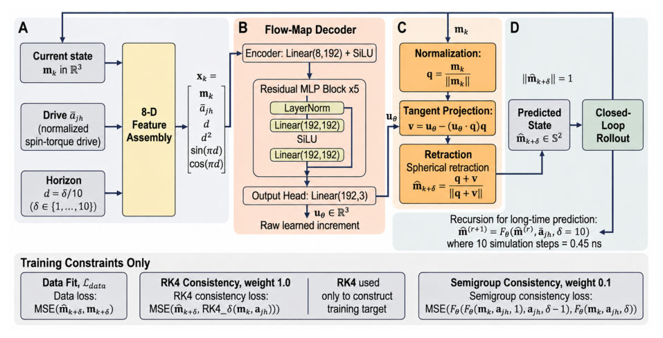

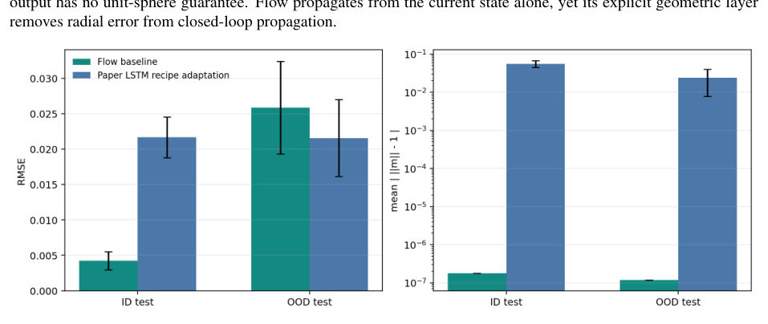
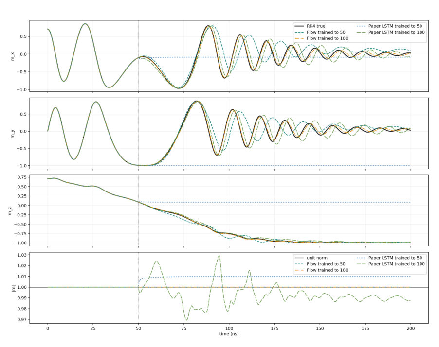
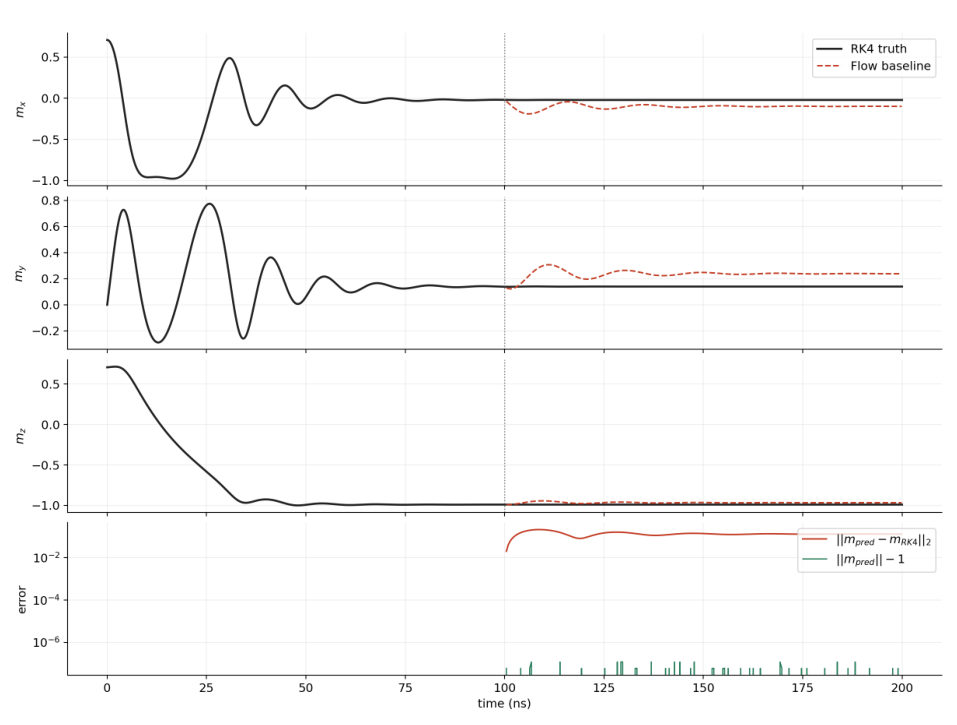
Summary. This paper introduces a physics-constrained neural flow map to accelerate the simulation of magnetization dynamics governed by the STT-LLG equation. By learning a direct, geometry-preserving mapping for finite-time evolution, it bypasses the need for slow, fine-step numerical integration. The method significantly improves accuracy and stability for long-horizon predictions compared to standard recurrent neural network approaches.
Why it may be interesting. This work provides a powerful, data-driven surrogate model for solving complex, non-linear differential equations governing magnetization dynamics, which is crucial for simulating spintronic devices and open quantum systems.
Main problem. The primary challenge is overcoming the computational bottleneck associated with simulating current-driven magnetization dynamics, which traditionally requires computationally expensive, fine-step integration of the STT-LLG equation.
Main result. The proposed physics-constrained neural flow map achieves superior in-domain accuracy and geometric stability compared to an adapted LSTM baseline, enabling physically admissible long-horizon prediction.
Method. The authors developed a neural flow map that learns a finite-time evolution operator, mapping the current state, spin-torque strength, and time span directly to a future state in a single forward pass.
Model / system. The system models single-macrospin magnetization dynamics governed by the spin-transfer-torque Landau-Lifshitz-Gilbert (STT-LLG) equation, ensuring the magnetization vector remains constrained to the unit sphere ($\mathbb{S}^2$).
Key observables. Root Mean Square Error (RMSE) for state prediction, and maximum norm drift to quantify geometric stability.
Important parameters / regimes. The normalized spin-transfer-torque strength ($a_{JH}$), and the prediction time span ($\Delta t$).
Assumptions / limitations. The model relies on explicitly enforcing spherical geometry via tangent-space projection and spherical retraction to maintain physical admissibility, though dynamical extrapolation outside the training regime remains a limitation.
Figures summary. Figures compare the flow map's RMSE and norm drift against an LSTM baseline across in-domain and out-of-distribution (OOD) regimes, demonstrating superior geometric stability for the flow map.
Paper structure. The paper first identifies the computational bottleneck of STT-LLG simulation. It then proposes the physics-constrained flow map, detailing its architecture and loss function (incorporating data, duplication, and composition consistency terms). Finally, it validates the model by comparing its performance against LSTMs across various prediction regimes.
Conventional simulation of current-driven magnetization relies on fine-step integration of the spin-transfer-torque Landau--Lifshitz--Gilbert equation, creating a computational bottleneck in parameter sweeps and control searches. In this work, we propose a physics-constrained neural flow map that learns finite-time dynamics directly on the unit sphere. The model maps the current magnetization, spin-torque strength, and requested time span to a future state in a single forward pass. Tangent-space projection and spherical retraction preserve unit magnetization during recursive, composition-consistent rollout. We validate the framework on single-spin trajectories under in-domain torques and previously unseen but stronger drive. Beyond the training horizon, it achieves an in-domain root mean square error of $0.00425$ with norm drift at the $10^{-7}$ level. The flow outperforms an adapted Long Short-Term Memory (LSTM) in in-domain accuracy and geometric stability, although the LSTM retains slightly lower out-of-distribution state error. The resulting geometry-preserving propagator reduces reliance on fine-step integration and enables physically admissible long-horizon prediction.
Authors: Homa Saadatmand, M. Javad Zakeri, Ahmed Sameh Ahmed, Suraj Bhandari, Loubna Benkoula, Ameer B. Batarseh, Andrea Blanco-Redondo, Miroslaw Karpierz, Pawel S. Jung
Type: theory · Category: other · PDF: https://arxiv.org/pdf/2608.21751v1
Analysis basis: full PDF text, analyzed in chunks
Topic relevance: interference shaping light 1/5
Summary. This work presents a highly efficient, reduced-order model for analyzing how light interacts with chiral nematic liquid crystals. It successfully predicts the formation of optical solitons and self-focusing, demonstrating that the crystal's inherent chiral pitch dictates the confinement scale. This provides a powerful, fast tool for designing nonlinear photonic devices using soft matter.
Why it may be interesting. The coupling between light propagation (optics) and the nonlinear, soft-matter director field (liquid crystals) presents a complex, non-Hamiltonian, nonlinear wave problem relevant to nonlinear optics and pattern formation.
Main problem. The paper aims to develop a computationally efficient model to study nonlinear self-focusing and soliton formation in chiral nematic liquid crystals (ChNLCs).
Main result. The reduced-order model successfully reproduces the essential physics of saturable reorientational self-focusing, showing that the chiral pitch governs the characteristic length scale for soliton formation.
Method. The authors derived a reduced-order, semi-analytical model starting from the full Frank-Oseen equation, significantly reducing computational cost compared to standard iterative solvers.
Model / system. The system is Chiral Nematic Liquid Crystals (ChNLCs) whose optical properties are governed by light-induced molecular reorientation, described by the Frank-Oseen free energy minimization.
Key observables. Nonlinear refractive index, onset of self-localization, formation of discrete/continuous solitons, and astigmatic nematicons.
Important parameters / regimes. Chiral Pitch (Lambda, $\Lambda$), input beam waist ($\omega_0$), and elastic constants ($K$).
Assumptions / limitations. The model employs an adiabatic approximation for director dynamics and neglects full spatial nonlocality and long-range elastic interactions.
Figures summary. Figures illustrate the ChNLC cell structure, beam propagation, index modulation, and 2D soliton intensity distributions comparing exact and simplified model predictions.
Paper structure. The paper progresses from establishing the physical problem and governing equations (Frank-Oseen) to deriving the reduced-order model, validating its ability to capture key nonlinear phenomena (self-focusing, soliton transition) across 1D and 2D geometries.
We present a reduced-order semi-analytical model for reorientational nonlinearity in chiral nematic liquid crystals, showing that the chiral pitch acts as the dominant physical length scale governing the onset of nonlinear self-focusing and soliton formation. Starting from the full Frank-Oseen equation, we derive a closed-form expression for the optically induced molecular rotation that captures the essential saturable response of the medium while reducing computational cost by more than two orders of magnitude compared with standard relaxation-method solvers. Despite its simplicity, the model reproduces the essential features of the numerically obtained nonlinear refractive index, the onset of self-localization, and the transition from discrete to continuous solitons in one and two dimensions. It further predicts the formation of fully localized astigmatic nematicons with only minor shifts in the self-localization threshold due to the neglect of nonlocal effects. The proposed model provides direct physical insight into light-matter interactions with soft matter media and offers a computationally efficient tool for the design and optimization of nonlinear photonic devices.
Authors: Wenqian Tu, Run Lv, Xiaoying Li, Li'e Liu, Dingfu Shao, Yuping Sun, Wenjian Lu
Type: theory · Category: strongly correlated electrons · PDF: https://arxiv.org/pdf/2608.23083v1
Analysis basis: full PDF text, analyzed in chunks
Topic relevance: Keldysh / 2PI / non-Gaussian methods 1/5
Summary. This work demonstrates that intercalating guest atoms into TMDs like NbSe2 can break inversion symmetry, which is crucial for stabilizing 3D Ising superconductivity. By identifying specific non-centrosymmetric phases, the authors predict that these materials can achieve upper critical fields significantly higher than the Pauli limit. This establishes intercalation as a powerful tool for designing novel superconducting materials.
Why it may be interesting. The concept of engineering superconductivity via symmetry breaking (specifically inversion symmetry) to enhance superconducting properties like critical fields is highly relevant to understanding exotic quantum states in condensed matter systems.
Main problem. The challenge is realizing and understanding three-dimensional (3D) Ising superconductors, which exhibit upper critical fields far exceeding the Pauli paramagnetic limit.
Main result. Intercalation is established as a viable symmetry-engineering strategy to create 3D Ising superconductors in TMDs, with specific compounds like InNbSe2 and SnNbSe2 showing predicted high critical fields.
Method. The study uses first-principles calculations (DFT) combined with Bogoliubov-de Gennes (BdG) theory to model superconductivity and critical fields.
Model / system. The system involves intercalated NbSe2 and NbTe2 compounds, specifically focusing on the non-centrosymmetric P-6m2 polytype where inversion symmetry is broken. The superconducting state is modeled using a BdG Hamiltonian incorporating spin-orbit coupling and Zeeman terms.
Key observables. In-plane upper critical fields (H_c2,parallel), superconducting transition temperature (T_c), and the out-of-plane spin purity on the Fermi surface.
Important parameters / regimes. SOC splittings (80-100 meV), Pauli paramagnetic limit (H_P), and the ratio H_c2,parallel / H_P (predicted 4-7).
Assumptions / limitations. The superconducting pairing is modeled as s-wave spin-singlet, and the analysis relies on the assumption that intercalation successfully breaks inversion symmetry.
Figures summary. Figures illustrate crystal structures, band dispersions showing SOC splitting, and potentially the superconducting gap structure or spin texture maps.
Paper structure. The paper systematically designs 16 compounds, identifies the four promising non-centrosymmetric candidates, and then uses advanced calculations (BdG, spin texture analysis) to confirm the Ising superconducting mechanism and predict high critical fields.
Ising superconductors exhibit in-plane upper critical fields far exceeding the Pauli paramagnetic limit, a hallmark first established in two-dimensional (2D) monolayer transition-metal dichalcogenides (TMDs). This field resilience requires the coexistence of strong spin-orbit coupling (SOC) and broken inversion symmetry, yet three-dimensional (3D) bulk realizations remain scarce because equilibrium stacking typically restores inversion symmetry. Here we demonstrate that intercalation provides a practical route to break this symmetry, systematically designing 16 NbSe$_2$- and NbTe$_2$-based compounds from four intercalants (In, Sn, Pb, Bi) across two polytypes: non-centrosymmetric $P\bar{6}m2$ and centrosymmetric $P6_3/mmc$. Four compounds in the $P\bar{6}m2$ phase, InNbSe$_2$, SnNbSe$_2$, PbNbSe$_2$, and PbNbTe$_2$, emerge as promising 3D Ising superconductors. They exhibit SOC splittings of 80-100 meV near the Fermi level, dominant out-of-plane spin polarization, and anisotropic superconductivity with $T_c=2.6$-$5.4$ K. Notably, spin-texture analysis reveals that the efficiency of Ising protection is governed not by the magnitude of SOC splitting alone but by the out-of-plane spin purity on the Fermi surface. Bogoliubov-de Gennes (BdG) calculations predict in-plane upper critical fields reaching 4-7 times the Pauli limit. These findings establish intercalation as a promising symmetry-engineering strategy for realizing 3D Ising superconductors in TMDs.
Authors: Zahir Muhammad, Shashi B. Mishra, Gayatri, Grzegorz Krasucki, Wajid Ali, Katarzyna Olkowska-Pucko, Obaid Iqbal, Zia Ur Rehman, Aziz Ur Rahman, Maciej R. Molas, Lin Xiaoyang, Weisheng Zhao
Type: both · Category: other · PDF: https://arxiv.org/pdf/2608.22700v1
Analysis basis: full PDF text, analyzed in chunks
Summary. This work characterizes the anisotropic lattice dynamics of the 1D van der Waals semiconductor ZrSnS3 using advanced Raman spectroscopy and DFT. The study confirms strong structural anisotropy and reveals helicity-dependent phonon signatures, which are further validated by measuring a highly anisotropic photoresponse in fabricated nanowire devices. This establishes ZrSnS3 as a promising material for polarization-sensitive optoelectronics.
Why it may be interesting. The strong coupling observed between polarization, lattice vibrations (phonons), and charge carriers in a low-dimensional material like ZrSnS3 provides a platform for understanding directional quantum transport phenomena.
Main problem. The study investigates the anisotropic lattice dynamics and photoresponse in the quasi-1D van der Waals semiconductor ZrSnS3.
Main result. The material exhibits strong structural and lattice anisotropy, evidenced by helicity-dependent phonon responses and a pronounced, power-scalable anisotropic photoresponse in fabricated nanowires.
Method. The research combines experimental techniques like angle- and polarization-dependent Raman spectroscopy with first-principles Density Functional Theory (DFT) calculations.
Model / system. The physical system is the quasi-one-dimensional van der Waals semiconductor ZrSnS3, belonging to the MXQ3 family, which possesses an orthorhombic structure.
Key observables. Raman spectra (unpolarized, polarized, helicity-resolved), phonon dispersion, photoresponsivity (mA/W), and temperature-dependent shifts/linewidths.
Important parameters / regimes. Temperature (e.g., 5 K), excitation wavelengths (405 nm vs. 785 nm), and polarization/helicity states.
Assumptions / limitations. The analysis assumes that the backscattering arrangement limits observation to certain symmetry modes, and that the Klemens model can describe anharmonic effects.
Figures summary. Figures show XRD/STEM confirmation of structure, phonon dispersion/DOS, comparison of experimental/theoretical Raman spectra, and polarization/temperature dependence maps.
Paper structure. The paper proceeds by characterizing the structure (XRD/STEM), validating lattice dynamics via DFT/Raman comparison, detailing temperature and polarization dependencies (including chirality), and concluding with optoelectronic device measurements.
Low-dimensional van der Waals semiconductors with reduced symmetry provide a unique platform for exploring anisotropic physical properties. The quasi-one-dimensional family MXQ$_3$ (M = Hf, Zr; X = Sn; Q = S, Se) exhibits notable structural anisotropy, where zigzag atomic chains influence optical phenomena such as birefringence. This study investigates anisotropic lattice dynamics in ZrSnS$_3$ using angle- and polarization-dependent Raman spectroscopy. Temperature-dependent measurements reveal anharmonic phonon behavior, indicating strong phonon-phonon coupling. Density functional theory calculations show good agreement with the experimentally observed Raman spectra, validating the microscopic description of the lattice dynamics. We also observe a helicity-dependent intensity and a reversal in phonon intensity between lower- and higher-frequency modes under circularly polarized light, which is characteristic of chiral phonons governed by the polarization of the Zr/Sn chains. Our first-principles analysis further shows that angular-momentum-like phonon textures can emerge away from the $Γ$-point near mode-hybridization and avoided-crossing regions, providing microscopic insight into the observed helicity-dependent Raman signatures. Furthermore, we fabricate an optoelectronic device from a thin ZrSnS$_3$ nanowire, demonstrating a photoresponsivity of 50~mA/W under 520~nm laser excitation (1~mW/cm$^2$). The device exhibits a pronounced, power-scalable anisotropic photoresponse with a clear preferred polarization direction. These results highlight the coupling mechanisms between polarization, lattice vibrations, and charge carriers in ZrSnS$_3$, establishing it as a promising material for polarization-sensitive optoelectronics and directional quantum transport.
Authors: Bikram Baruah, Snehasish Nandy, Subhasis Panda
Type: theory · Category: other · PDF: https://arxiv.org/pdf/2608.23289v1
Analysis basis: full PDF text, analyzed in chunks
Summary. This work develops a symmetry-constrained tight-binding model to study 1T-MX2 monolayers, linking their electronic structure to their quantum geometry. By showing that the interband f-sum rule connects the integrated optical spectral weight to the quantum metric, the authors propose that optical measurements can serve as a direct, experimental probe of the material's underlying quantum geometry.
Why it may be interesting. While focused on solid-state physics, the explicit connection between measurable optical properties (spectral weight) and a fundamental geometric invariant (quantum metric) provides a powerful, quantifiable diagnostic tool applicable to any system where geometry dictates electronic response.
Main problem. The paper aims to develop a comprehensive, microscopic theoretical framework to connect the quantum geometry, electronic band structure, and optical response in 1T-MX2 monolayers.
Main result. They establish that the integrated optical spectral weight serves as an experimentally accessible probe for quantifying the quantum geometry of the occupied Bloch states in these materials.
Method. The study employs a transferable eleven-band Slater-Koster tight-binding (SK-TB) model, parameterized using DFT calculations for specific materials.
Model / system. The system is the centrosymmetric 1T-MX2 monolayer (e.g., ZrS2), modeled by an 11-band Hamiltonian constructed in an orthogonal orbital basis using symmetry-constrained SK parameters.
Key observables. Electronic structure (band gaps), optical conductivity (spectral weight), and the quantum metric (quantum geometric tensor).
Important parameters / regimes. The M–X bond angle ($ heta$) and the lattice constant ($a$) are key geometric parameters governing the Hamiltonian.
Assumptions / limitations. The primary assumption is that the SK-TB model, parameterized by DFT, can accurately capture the complex interplay between electronic structure and quantum geometry across the entire isostructural 1T-MX2 family.
Figures summary. The notes mention figures showing the crystal structure, the M–X bond angle ($ heta$), and DFT-computed orbital-projected band structures for monolayer ZrS2.
Paper structure. The paper develops the SK-TB Hamiltonian by defining various hopping matrices (M-X, X-X, M-M) based on the crystal geometry, parameterizes these using DFT fitting procedures, and then uses the resulting model to calculate and relate the quantum metric to the optical spectral weight.
Centrosymmetric 1T-MX$_2$ monolayers(MLs) have attracted considerable attention owing to their intriguing transport properties and potential technological applications arising from the interplay among quantum geometry, electronic band structure, and band-gap characteristics. Despite this rich physics, a comprehensive microscopic tight-binding(TB) description that simultaneously captures these properties remains insufficiently established, while first-principles approaches can be computationally demanding for systematic investigations across different materials and perturbations. Here, we develop a transferable eleven-band Slater-Koster TB description of ML 1T-MX$_2$ TMDs and use it to establish a connection among their microscopic electronic structure, quantum geometry, and optical response. The model is constructed in an orthogonal orbital basis from the crystal geometry and symmetry-constrained SK parameters, with material-specific parametrizations obtained from DFT calculations for ML ZrS$_2$ and HfS$_2$. The resulting geometry-based Hamiltonian accurately describes the low-energy electronic structures and provides a natural framework for extending the analysis to the broader isostructural 1T-MX$_2$ family. We find that the pristine MLs possess a finite quantum metric, with the dominant contribution concentrated in the two highest occupied bands owing to the small near-gap energy separation and strong metal-chalcogen $p$-$d$ hybridization. Furthermore, we verify the interband $f$-sum rule, which directly relates the integrated optical spectral weight to the Brillouin-zone-averaged quantum metric. Our results establish optical spectral weight as an experimentally accessible probe of the quantum geometry of occupied Bloch states and provide a unified microscopic framework for connecting electronic structure, quantum geometry, and measurable optical responses across the 1T-MX$_2$ family.